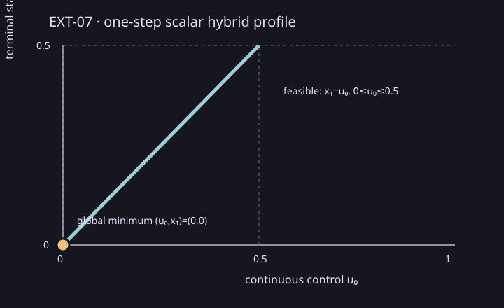

Controlled Systems Lab · EXT-07
Recorded execution of the public hybrid path, optimization and family-verification route.
The state dimension is one and the horizon is one stage, from time 0 to time 1.
The initial mode is coast at stage 0, with scalar state x₀=0.
There are two modes (coast and terminal) and one permitted edge
coast-to-terminal from coast to terminal at the boundary
between stages 0 and 1. The terminal mode is active at stage 1. Both mode invariants are universal
sets (they impose no additional state restrictions). There are no external channels, observations,
or temporal constraints. The source-mode scalar flow is x_pre=x₀+u₀, with control u₀∈[0,1].
The transition guard requires x_pre∈[0,0.5]; the one-dimensional identity reset sets
x₁=x_pre. The terminal objective is minimize x₁.
The full joint relation is x₀=0, x_pre=u₀, x₁=u₀, 0≤u₀≤0.5.
Its complete minimizer family is the point (x₀,u₀,x_pre,x₁)=(0,0,0,0).

From a clean report-tools checkout with CMake 3.31.6, fetch the frozen implementation commit and create a separate source worktree:
git fetch origin pull/472/head:refs/remotes/origin/ext07-source
git worktree add --detach <frozen-source> 2965baafa325550ad60ec91d44f5e3f86a832178
python scripts/reports/ext07/capture.py --source <frozen-source> --capture <fresh-capture> --commit 2965baafa325550ad60ec91d44f5e3f86a832178 --cmake cmake
python scripts/reports/ext07/ext07_collect.py --capture <fresh-capture> --source <frozen-source> --out <fresh-output>
python scripts/reports/ext07/render_saved.py --bundle <fresh-output>/<report-id> --checkFrozen source: commit 2965baafa325550ad60ec91d44f5e3f86a832178. The raw scenario and report record and raw measured trials are available beside this page.
| Paths | H rows | Dense row entries | Provider | Outcome | Feasibility | Optimality | Family coverage |
|---|---|---|---|---|---|---|---|
| 1 | 7 | 28 | csl.lp.highs@1.1.0+highs.1.11.0 | completed / optimal | established | established | established |
Every measured repetition matched objective 0 and control 0 within 1e-8.
The verifier uses numerical binary64 checks; this is not validated arithmetic. The LP adapter returned no objective interval bounds; the bounded independent scalar family verifier checked the global minimum and complete minimizer set.
Maximum reported primal row residual: 0; variable residual: 0.
One excluded 10-call warmup preceded seven measured 20-call batches: 140 measured calls and zero observed failures. Median total batch duration: 6,288,700 ns (range 5,492,300–9,158,900 ns). Median accumulated phase durations: setup 285,400 ns, relation assembly 518,800 ns, solve 4,994,600 ns, verify 507,900 ns, and end-to-end 6,288,700 ns. End-to-end includes fixture/provider setup, path enumeration, relation construction, solve and family verification. Phase medians are calculated separately across batches and are not additive to the end-to-end median; output serialization and rendering are excluded.
One host and one fixed profile are measured. There is no comparator, speedup, source-mapped bottleneck, or scalability claim. Thread and backend details, all raw repetitions, source/build receipts, and failures are retained in the versioned record, raw trials, smoke row, summary CSV, manifest, and offline ZIP. Frozen source: 2965baafa325550ad60ec91d44f5e3f86a832178.